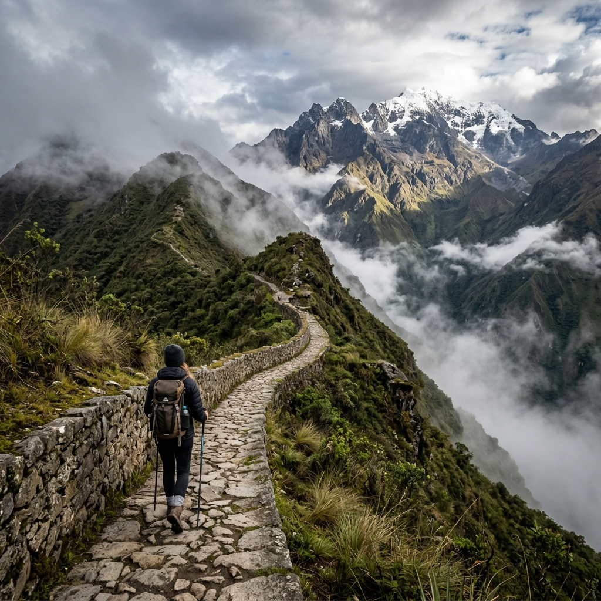

🏅 Top

Inca Trail Classic
Cusco, Wayllabamba, Pacaymayo, Wiñay Wayna, Machu Picchu
Nuestra ruta insignia caminando por la antigua red de caminos incas, atravesando pasos de alta montaña, bosques nubosos y complejos arqueológicos únicos, para finalizar con la mágica entrada a Machu Picchu por el Inti Punku.